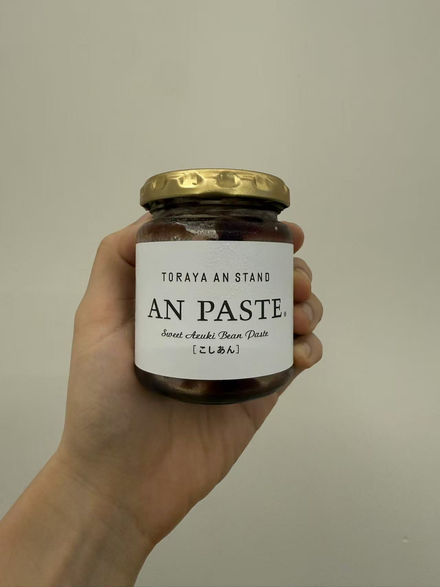

HOMEMADE / RED BEAN PASTE
顆粒大大的黃油紅豆醬
自從早上開始吃燕麥餅乾配高達 Cheese 後，偶然發現中間夾日本「TORAYA 虎屋」的紅豆醬，是最配的組合。有層次，不會只有 Cheese 膩膩鹹鹹的感覺。
漸漸的紅豆醬的庫存消耗非常快，一下子就要見底了。想在虎屋的紅豆醬吃完之前自製一瓶。材料也比想像中的單純，紅豆、黃油、砂糖即可。
食材
- 紅豆粒
- 200g
- 砂糖
- 65g
- 黃油
- 35g
作法
- 紅豆粒反覆冷水煮沸，3–4 次，最後一次煮到軟爛。記得不要焦底，快燒乾時要持續攪拌。
- 倒下黃油和砂糖，攪拌加熱。
- 如果還有水分，加熱至湯汁極少量。
- 完成！